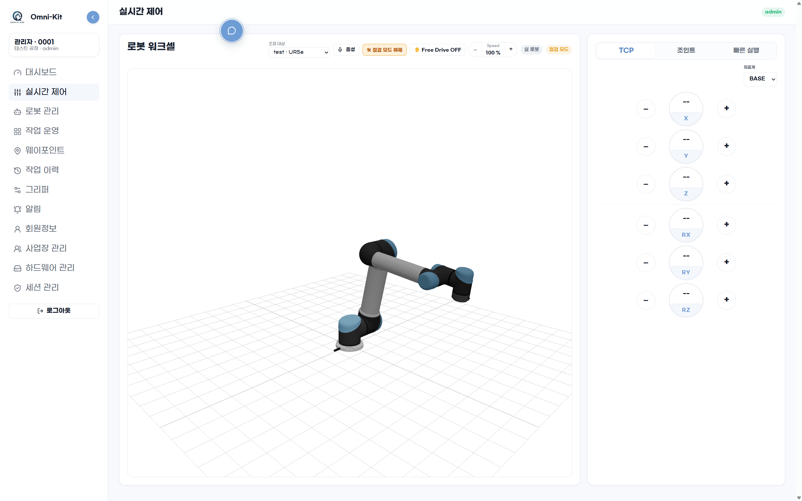
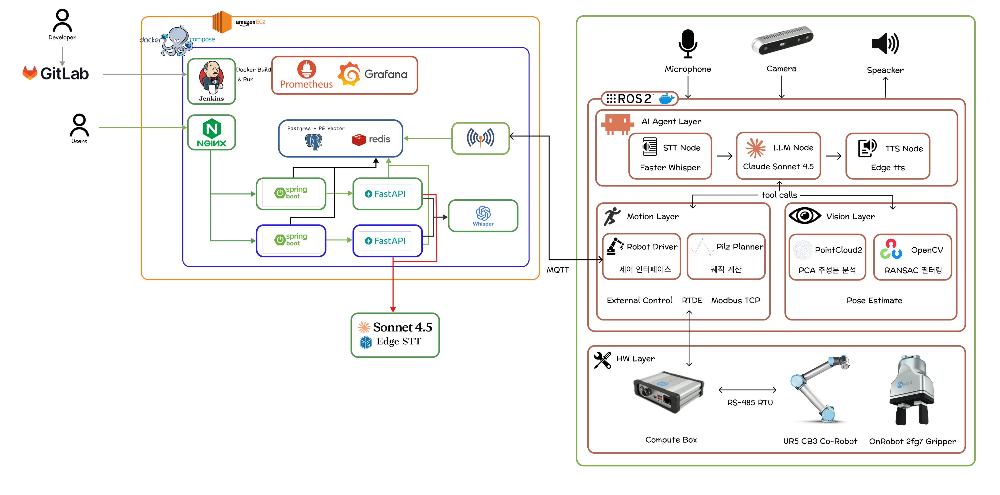
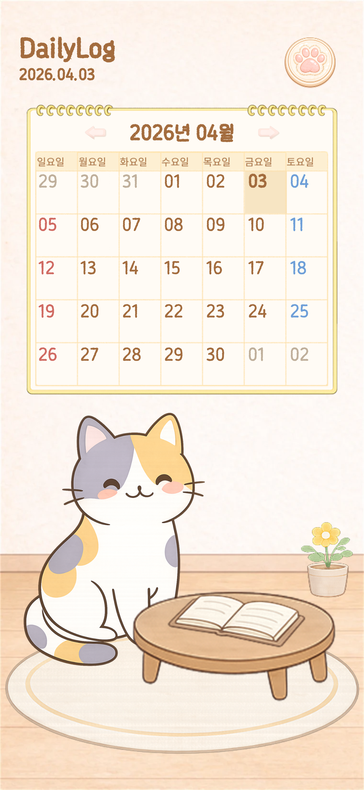
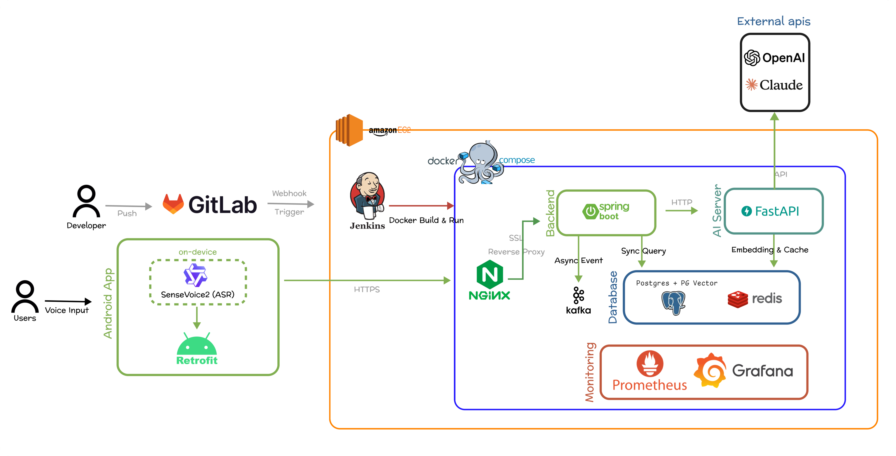

Omni-Kit
2026.04 - 2026.05
STT 기반 협동 로봇팔 제어와 티치펜던트 대체 웹 콘솔 프로젝트
ReactSpring BootWebAuthn
Project History
웹, 모바일, AIoT 프로젝트를 기간과 핵심 기술 기준으로 정리했습니다. 다음 페이지부터는 각 프로젝트 상세 페이지를 사용해 주요 역할, 구현 내용, 트러블슈팅, 아키텍처를 확인할 수 있습니다.
2026.04 - 2026.05
STT 기반 협동 로봇팔 제어와 티치펜던트 대체 웹 콘솔 프로젝트
2026.02 - 2026.04
대화형 일기 작성, 감정 분석, 캘린더 연동을 제공하는 Android 앱 프로젝트
2026.01 - 2026.02
병해충 감시 자율주행 로봇과 농장 관제 웹 서비스를 연결한 AIoT 프로젝트
Cobot Operations Console
Project Overview
OnRobot Korea와 함께한 연계 프로젝트로, STT를 이용한 협동 로봇팔 제어와 기존 티치펜던트를 대체할 웹 콘솔 구현을 목표로 했습니다. 웹 내부는 REST/WebSocket으로 구성하고, 로봇과 웹 시스템은 MQTT 토픽으로만 소통합니다.
Omni-Kit
기존 협동 로봇팔 제어는 티치펜던트와 현장 PC 중심이라 음성 명령이나 웹 기반 운영 흐름으로 확장하기 어렵습니다. Omni-Kit은 STT 명령, 로봇 상태, 작업 흐름을 웹 콘솔로 끌어올려 더 직관적인 운영 환경을 만드는 프로젝트입니다.
React 콘솔은 STT 음성 패널, URDF 3D 모델, 레시피, 웨이포인트, 세션·장치 관리 화면을 제공하고, Spring Boot는 인증·운영 API와 데이터 모델을 담당합니다. 로봇과 웹 시스템 사이의 송수신은 MQTT 토픽으로 처리했습니다.
상태 확인, STT 패널, TCP/조인트 제어, 레시피·웨이포인트·작업 이력을 React 관리자 콘솔로 묶었습니다.
프론트엔드 화면·라우팅·인증 흐름과 Spring Boot API, 도메인, 배포/인프라 구조를 정리했습니다.
Yubico WebAuthn 기반 장치 등록·인증·승인 모델로 승인된 하드웨어만 접근하도록 보호했습니다.
로봇 파트의 상태·이벤트 형식에 맞춰 토픽 매핑과 화면 반영을 최소 수정으로 맞췄습니다.
Omni-Kit

Omni-Kit

Omni-Kit
로그인, 승인 대기, 대시보드, 실시간 제어, 로봇/레시피/웨이포인트/이력, 관리자 화면과 라우팅/인증 가드를 구현했습니다.
Yubico RelyingParty 기반 등록 옵션·검증·어설션과 승인 credential 기반 접근 제어를 구성했습니다.
회원, 사이트, 장치, 세션, 알림, MFA 도메인의 API와 JPA 모델, Redis 기반 challenge 흐름을 정리했습니다.
웹/백엔드 배포 구조와 환경 변수를 정리하고, 로봇과 웹 사이 통신 범위를 MQTT 중심으로 맞췄습니다.
기존 탭이 계속 살아 있던 문제를 takeover 로그인 시 기존 세션 무효화와 /auth/me 재검증으로 해결했습니다.
Linux platform authenticator 부재를 고려해 실서비스 접근 제한과 개발용 User-Agent 우회 경로를 분리했습니다.
폐기된 기기의 재등록이 막히던 문제를 승인 대기 상태로 되돌려 재검토할 수 있게 수정했습니다.
상태 변화가 많은 운영 UI를 컴포넌트 단위로 나누고 관리하기 위해 사용했습니다.
하드웨어 화이트리스트와 credential 기반 접근 제어에 사용했습니다.
로봇과 웹의 경계를 MQTT로 분리하고 운영 관찰 흐름을 배포 구조 안에 연결했습니다.
Emotion Diary Android Project
Project Overview
STT/TTS 기반 일기 작성 애플리케이션 프로젝트입니다. 대화 기반으로 하루를 기록하고 감정 결과를 일정 추천과 캘린더 흐름으로 연결하는 Android 앱입니다.
DailyLog
하루의 정리를 대화 기반으로 더 간단하게 기록하고, 그 결과를 바탕으로 일정 추천과 일정 관리까지 자연스럽게 이어질 수 있는 경험을 만들고자 했습니다.
Compose 화면 설계, Repository 계층, Room DB, 캘린더 프로바이더 연동, 결과 페이지와 프로필 그래프 흐름 검증을 중심으로 작업했습니다.
질문형 흐름을 따라 하루의 감정과 상황을 기록하고, 결과 화면까지 자연스럽게 이어지도록 구성했습니다.
작성한 일기 내용을 바탕으로 감정 결과를 분석하고 사용자가 하루를 돌아볼 수 있도록 피드백을 제공합니다.
분석된 감정 결과를 바탕으로 추천 활동을 제안하고 일정과 연결해 다음 행동으로 이어지게 했습니다.
앱 내부 기록과 Calendar Provider 이벤트를 함께 보여주어 감정 기록과 일정 관리를 한 흐름으로 연결합니다.
DailyLog

DailyLog

DailyLog
로그인, 회원가입, 튜토리얼, 홈, 일기 작성, 결과, 캘린더, 프로필까지 이어지는 주요 흐름을 설계했습니다.
오브젝트 중심 인터페이스 감성을 유지하면서 각 화면의 레이아웃과 상호작용을 구현했습니다.
Room DB와 Repository 구조를 통해 일기와 사용자 데이터를 안정적으로 저장하고 계층을 분리했습니다.
일기 작성, 감정 분석, 추천, Calendar Provider 연동, 감정 그래프까지 실제 흐름으로 검증했습니다.
해상도를 화면에 필요한 수준으로 조절하고 PNG를 WebP로 전환해 과도한 리소스 사용을 줄였습니다.
오브젝트 기반 화면에서 눌러야 하는 요소와 다음 흐름을 단계별로 보여주어 초기 학습 비용을 낮췄습니다.
Smart Farm Control Platform
Project Overview
센서 데이터, 로봇 순찰, 병해충 탐지, 운영 리포트를 하나의 흐름으로 연결한 스마트팜 통합 관제 웹 서비스입니다. 조회에서 끝나지 않고 상태 확인 이후 원인 파악과 제어 액션까지 이어지도록 구성했습니다.
Meer's Farm
농부가 병해충 여부와 식물 상태를 직접 확인해야 하는 부담을 줄이고, 로봇 순찰과 분석 결과를 짧은 시간 안에 이해할 수 있게 하는 데 초점을 맞췄습니다.
대시보드, 농장 상세, 로봇 제어, 이미지 갤러리, 운영 리포트를 하나의 서비스 흐름으로 연결했습니다.
전체 농장 보기와 개별 농장 보기를 나누어 온도, 습도, 조도, pH, NPK, 위험도 데이터를 빠르게 비교할 수 있게 했습니다.
행, 열, 층수 기반 구조 데이터와 자동화 임계값을 함께 다루고 섹터 상태가 상위 대시보드에 반영되도록 설계했습니다.
로봇 등록, 상세 조회, 모드 전환, 정지, 복귀, 스케줄 타임라인까지 연결해 관제 기능을 강화했습니다.
병해충 이미지와 리포트를 시간 기준으로 매칭해 어떤 문제가 언제 발생했는지 함께 확인할 수 있게 구성했습니다.
Meer's Farm

Meer's Farm

Meer's Farm
Django REST Framework 기반 농장, 섹터, 로봇, 리포트 API를 설계했습니다.
React 기반 대시보드, 리포트, 갤러리, 로봇 상세 화면을 구현했습니다.
JWT 로그인, 회원가입, 사용자 설정과 접근 제어 로직을 적용했습니다.
병해충 이미지, 리포트, 로그를 시간 기준으로 연결했습니다.
Windows 로컬과 Linux 배포 환경의 파일명 대소문자 차이를 확인하고 CSS 파일명과 import 경로를 소문자 기준으로 통일했습니다.
farmId/id, createdAt/create_time, NPK 객체 구조 차이를 화면용 공통 포맷으로 정규화했습니다.
대시보드와 상단 메뉴에 농장/로봇 상세 이동, 갤러리 바로가기, 농장 추가 진입점을 배치했습니다.